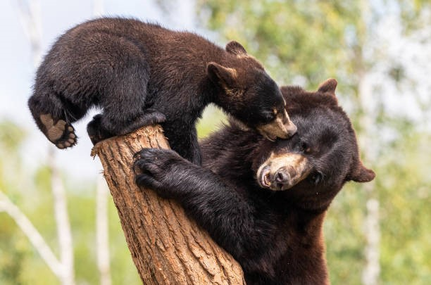

The American black bear (Ursus americanus), or simply black bear, is a species of medium-sized bear which is endemic to North America. It is the continent's smallest and most widely distributed bear species. It is an omnivore, with a diet varying greatly depending on season and location. It typically lives in largely forested areas; it will leave forests in search of food and is sometimes attracted to human communities due to the immediate availability of food.
The International Union for Conservation of Nature (IUCN) lists the American black bear as a least-concern species because of its widespread distribution and a large population, estimated to be twice that of all other bear species combined. Along with the brown bear (Ursus arctos), it is one of the two modern bear species not considered by the IUCN to be globally threatened with extinction.
American black bears are reproductively compatible with several other bear species and occasionally produce hybrid offspring. According to Jack Hanna's Monkeys on the Interstate, a bear captured in Sanford, Florida, was thought to have been the offspring of an escaped female Asian black bear and a male American black bear.[17] In 1859, an American black bear and a Eurasian brown bear were bred together in the London Zoo, but the three cubs that were born died before they reached maturity.
Historically, American black bears occupied the majority of North America's forested regions. Today, they are primarily limited to sparsely settled, forested areas.[30] American black bears currently inhabit much of their original Canadian range, though they seldom occur in the southern farmlands of Alberta, Saskatchewan and Manitoba; they have been extirpated on Prince Edward Island since 1937.[31] Surveys taken in the mid-1990s found the Canadian black bear population to be between 396,000 and 476,000 in seven provinces;[32] this estimate excludes populations in New Brunswick, the Northwest Territories, Nova Scotia and Saskatchewan. All provinces indicated stable populations of American black bears over the 2000s.

Black bear and black bear cub.